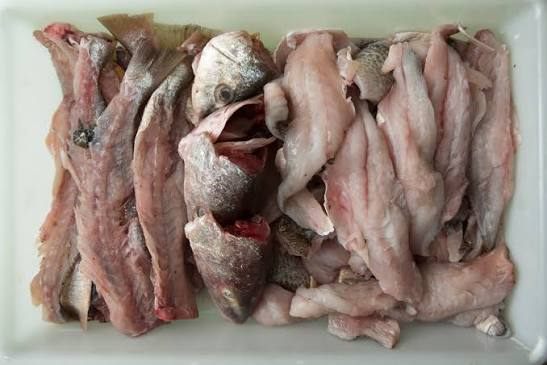
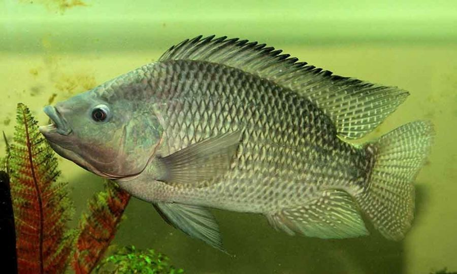
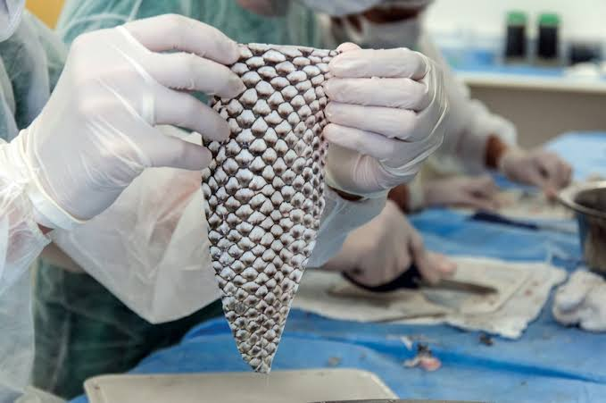
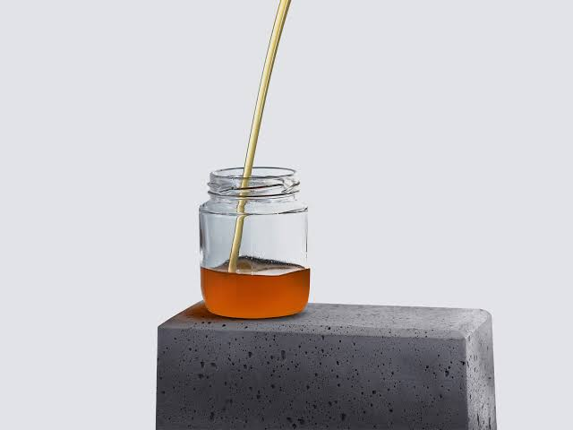
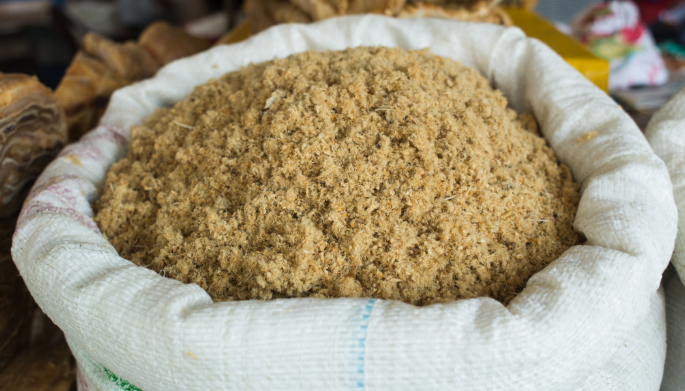
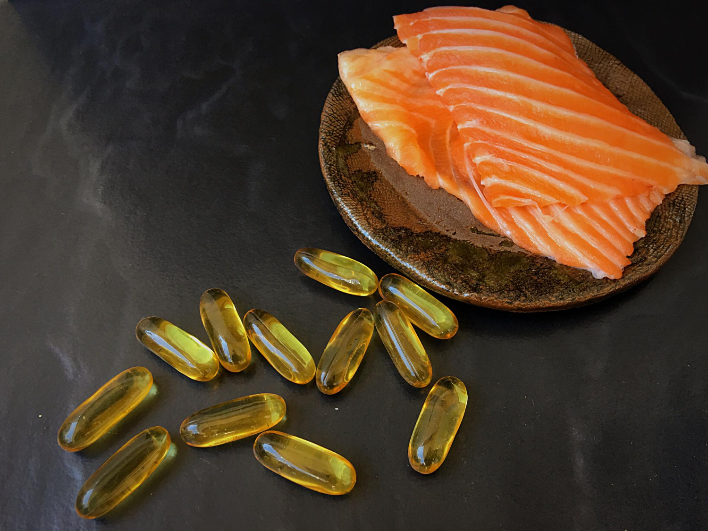

Origem e expansão
Da África aos polos brasileiros
Nativa dos grandes lagos africanos, a tilápia foi introduzida no Brasil em 1971 e encontrou no país clima, tecnologia e mercado para se tornar protagonista.
Origem geográfica
A espécie é nativa principalmente da bacia do rio Nilo e de diversos sistemas aquáticos da África, sendo encontrada naturalmente em lagos como Vitória, Albert, Kyoga, Edward e outros.
Origem
Lago Vitória e outros sistemas africanos.
1971
Introdução no Brasil via DNOCS.
1980s
Expansão inicial no Nordeste brasileiro.
1990s
Programas de melhoramento genético, incluindo linhagem GIFT.
2010s
Boom da tilapicultura, com Paraná e São Paulo em destaque.
2022
Brasil responde por 22,1% do crescimento aquícola na América Latina e Caribe, segundo FAO 2024.
Biologia
Características da espécie
A combinação entre crescimento rápido, rusticidade, hábito alimentar flexível e reprodução eficiente explica sua adoção em diferentes sistemas de cultivo.
Taxonomia
| Categoria | Classificação |
|---|---|
| Reino | Animalia |
| Filo | Chordata |
| Classe | Actinopterygii |
| Ordem | Cichliformes |
| Família | Cichlidae |
| Gênero | Oreochromis |
| Espécie | O. niloticus |
Porte
Até 60 cm e 5 kg em condições favoráveis.
Temperatura
Faixa ideal de cultivo entre 25 e 30°C.
Salinidade
Pode tolerar salinidades elevadas, chegando próximo de 25 a 30 g/L quando devidamente aclimatada. Essa tolerância pode variar conforme a linhagem e o processo de aclimatação.
Alimentação
Onívora com forte aproveitamento vegetal.
Reprodução
Incubação bucal feita pela fêmea.
Crescimento
Alcança 500 g em 6 a 8 meses. O desempenho pode variar conforme a genética, o manejo e a temperatura da água.
Longevidade
Pode viver de 8 a 10 anos.
Rusticidade
Tolera ampla variação ambiental e baixos níveis de oxigênio dissolvido melhor do que muitas outras espécies cultivadas.
Brasil produtivo
Distribuição no território nacional
A produção se concentra em polos com tecnologia, logística e reservatórios aptos para tanques-rede, viveiros e tanques escavados.
Tecnologia de cultivo
Sistemas de produção
Da piscicultura familiar ao sistema de recirculação, cada arranjo produtivo equilibra custo, densidade, controle ambiental e eficiência hídrica.
Alevinagem
Reprodução e reversão sexual
A incubação bucal e a precocidade sexual exigem manejo reprodutivo rigoroso para padronizar lotes e evitar superpopulação.
Maturidade
Machos aos 3 a 5 meses e fêmeas aos 4 a 6 meses em condições tropicais, variando com temperatura e nutrição.
Monossexo macho
Uso técnico de 17-α-metiltestosterona na fase inicial, normalmente administrada por meio da ração durante os primeiros dias de vida dos alevinos, para produzir lotes predominantemente masculinos, melhorar o desempenho produtivo e controlar a reprodução nos viveiros.
Temperatura
A reprodução é favorecida entre 26 e 29°C, com água estável e baixa carga orgânica.
Alimentação
Nutrição por fase de cultivo
A ração pode representar 60 a 70% do custo de produção, tornando conversão alimentar e manejo de arraçoamento pontos decisivos.
Tabela nutricional
| Fase | Proteína | Frequência | Grânulo |
|---|---|---|---|
| Larva 0-5 g | 45-50% | 6-8x/dia | Pó fino |
| Juvenil 5-50 g | 32-36% | 4-6x/dia | 1,5-2 mm |
| Engorda 50-300 g | 28-32% | 3-4x/dia | 3-4 mm |
| Final 300 g+ | 26-28% | 2-3x/dia | 6-8 mm |
Conversão alimentar ideal
Conversão alimentar ideal: 1,2 a 1,8. Esse valor indica a quantidade aproximada de ração necessária para produzir um quilograma de ganho de peso, podendo variar conforme a qualidade da ração, o manejo e as condições ambientais.
Monitoramento
Qualidade da água
Oxigênio, pH, temperatura e compostos nitrogenados determinam desempenho, sanidade e bem-estar dos peixes.
Temperatura 28°C
Oxigênio 6 mg/L
Recomenda-se que o nível de oxigênio dissolvido nunca seja inferior a 4 mg/L.
pH 7,8
Amônia total
Ideal abaixo de 1,0 mg/L; níveis acima de 3,0 mg/L são críticos.
Nitrito
Ideal abaixo de 0,5 mg/L; acima de 1,0 mg/L há risco metabólico.
Transparência
Faixa de 30 a 40 cm ajuda a equilibrar plâncton, luz e oxigenação.
Biosseguridade
Sanidade aquícola
A FAO 2024 destaca biosseguridade e controle de doenças como vias essenciais para uma aquicultura eficiente e resiliente.
Bactérias
Streptococcus agalactiae está associado a alterações oculares, nado errático e mortalidade; Francisella orientalis pode provocar infecções sistêmicas; Flavobacterium columnare está associada à columnariose.
Parasitas
Trichodina pode causar irritação e prejuízos às brânquias; Ichthyophthirius multifiliis está associado à ictiofitiríase, conhecida como doença dos pontos brancos.
Fungos
Saprolegnia, associada à saprolegniose, aparece como crescimento algodonoso em lesões, ovos ou peixes debilitados.
Vírus
TiLV, Tilapia Lake Virus, é uma preocupação global crescente que reforça quarentena e vigilância sanitária.
Prevenção
Quarentena, densidade adequada, limpeza de equipamentos, origem confiável de alevinos e qualidade da água reduzem risco sanitário.
Principais doenças da tilápia
Estreptococose: doença bacteriana que pode causar natação desorientada, escurecimento do corpo, olhos saltados, perda de equilíbrio e alta mortalidade.
Franciselose: infecção bacteriana que pode provocar emagrecimento, perda de apetite, lesões internas e formação de nódulos em órgãos como baço, fígado e rins.
Columnariose: doença bacteriana que pode causar lesões na pele, nas brânquias e na região da boca, sendo favorecida por condições inadequadas de manejo e qualidade da água.
Saprolegniose: infecção caracterizada por estruturas semelhantes a tufos de algodão na pele, nos ovos ou em áreas lesionadas do peixe.
Ictiofitiríase: doença parasitária conhecida como doença dos pontos brancos, provocando pequenos pontos claros na pele e nas brânquias, além de irritação e dificuldade respiratória.
Rotina produtiva
Manejo da produção
Manejo bem executado transforma potencial genético em ganho de peso, uniformidade e menor mortalidade.
Povoamento
Define estoque, densidade inicial e meta de biomassa final.
Biometria
Pesagens periódicas ajustam ração, conversão e previsão de despesca.
Classificação
Separação por tamanho diminui competição e melhora uniformidade.
Despesca
Planejamento por mercado, peso-alvo e temperatura da água.
Transporte
Oxigenação, jejum, densidade e tempo de viagem precisam ser controlados.
Registros
Histórico de lote, ração, mortalidade e água apoia decisões técnicas.
Economia
Cadeia produtiva
A tilapicultura conecta genética, alevinagem, nutrição, engorda, processamento, varejo e exportação, gerando renda em vários elos.
Emprego global
Segundo a FAO 2024, 61,8 milhões de pessoas trabalhavam no setor primário da pesca e aquicultura em 2022.
Piscicultura brasileira
A tilápia representa mais de 65% da piscicultura brasileira, dado frequentemente apresentado nos anuários da Associação Brasileira da Piscicultura — Peixe BR.
Dashboard
Mercado brasileiro e global
A FAO 2024 mostra a aquicultura como vetor central da Blue Transformation, com recordes de produção, comércio e participação no abastecimento mundial.
aquáticas mais produzidas no mundo,
aprox. 4ª em volume.
Tilápia no Brasil 2010-2022
Crescimento na América Latina
Piscicultura nacional
Projeção 2032
A FAO 2024 projeta crescimento de 7,6% para a aquicultura brasileira entre 2022 e 2032, de 738 mil para 794 mil toneladas.
Regras
Legislação e governança
Licenciamento, outorga, sanidade, rastreabilidade e controle de espécies exóticas estruturam a produção responsável.
Licenciamento ambiental
Baseado em normas ambientais, avaliação de impactos e requisitos de instalação.
Outorga de água
Uso de água em tanques, viveiros e reservatórios depende de autorização do órgão competente.
MAPA e sanidade
Registro, inspeção e controle sanitário sustentam processamento e comercialização.
Rastreabilidade
A FAO 2024 aponta certificações e rastreabilidade como pilares da Blue Transformation.
Bem-estar animal
Densidade, manejo, transporte e abate devem reduzir estresse e mortalidade.
Espécies exóticas
Escapes para corpos d'água naturais exigem prevenção e barreiras de contenção.
ODS 14
Sustentabilidade
Sistemas aquícolas bem manejados podem produzir proteína de alta qualidade com menor pegada ambiental, desde que controlem efluentes, escapes e uso de insumos.
Vida na água
A FAO é custodiante de 4 dos 10 indicadores do ODS 14.
RAS e bioflocos
Recirculação e comunidades microbianas reduzem descarte e consumo hídrico.
Efluentes
Sedimentação, biofiltração e manejo de ração diminuem carga orgânica.
Biodiversidade
Por ser exótica, a tilápia exige contenção para evitar impactos ecológicos.
Certificações
ASC e GlobalG.A.P. ajudam a organizar boas práticas produtivas.
Baixa pegada
Sistemas aquáticos são reconhecidos pela FAO como parte de soluções alimentares com menor impacto.
Uso racional da água
O uso racional da água, aliado ao monitoramento da qualidade e ao manejo adequado, contribui para uma produção mais eficiente e sustentável.
Aproveitamento integral
Produtos da tilápia
Como o filé representa cerca de 30% do peso do peixe, subprodutos ampliam valor econômico e reduzem desperdício. O rendimento de filé geralmente varia entre 28% e 36%, dependendo do tamanho do peixe, da linhagem, do método de processamento e da habilidade no corte.

Filé
Principal produto industrializado para varejo e exportação.

Peixe inteiro
Mercados regionais, feiras e consumo local.

Couro e pele
Moda, acessórios e bioindústria com alto valor agregado.

Colágeno
Aplicações cosméticas, farmacêuticas e biomateriais.

Óleo
Uso alimentar, industrial e suplementar.

Farinha
Subproduto para formulação de rações animais.

Ômega-3
Cápsulas e suplementos derivados do óleo.

Subprodutos
Cabeça, espinha e vísceras aproveitadas industrialmente.
Ferramentas
Calculadoras interativas
Simulações rápidas para estimar arraçoamento, biomassa e curva de crescimento conforme temperatura.
Calculadora de ração
Calculadora de biomassa
Curva de crescimento prevista
Imagens
Galeria de aquicultura
Espécie, cultivo, processamento, produtos e infraestrutura em uma grade filtrável.
Você sabia?
Curiosidades científicas
Fatos rápidos para enriquecer a apresentação acadêmica com detalhes memoráveis.
Incubação bucal
A fêmea carrega ovos e larvas na boca por 1 a 2 semanas.
Crescimento recordista
Pode crescer perto de 1 g/dia em condições ideais.
Salinidade
Pode tolerar salinidades elevadas, próximo de 25 a 30 g/L quando devidamente aclimatada.
4ª global
Está entre as espécies aquáticas mais produzidas do planeta.
Mais de 70 países
A tilápia é cultivada comercialmente em dezenas de países.
Egito
A tilápia domina a aquicultura em regiões áridas egípcias.
Reversão sexual
Tecnologia usada para formar lotes majoritariamente machos.
Couro de tilápia
É usado em bolsas, calçados e itens de luxo sustentáveis.
Filé de 30%
O filé costuma representar cerca de 30% do peso total.
Nome científico
Oreochromis niloticus remete ao gênero africano e ao Nilo.
Perguntas
FAQ
Respostas objetivas para os pontos mais comuns em sala de aula e discussão técnica.
A tilápia é nativa do Brasil?
Não. É originária da África e foi introduzida no Brasil em 1971.
Quanto tempo leva para atingir o peso de abate?
Em boas condições, atinge 500 a 700 g em 6 a 8 meses.
Qual a temperatura ideal de cultivo?
Entre 25 e 30°C; abaixo de 15°C o crescimento cai muito e acima de 35°C há risco severo.
Quanto vive uma tilápia?
Na natureza pode viver 8 a 10 anos; em cultivo o ciclo comercial costuma ser de 6 a 10 meses.
Qual o peso ideal para comercialização?
Para filé, geralmente 700 g a 1,2 kg; para peixe inteiro, 400 a 800 g.
Qual é o pH ideal para a criação de tilápias?
O pH ideal da água para a criação de tilápias geralmente fica entre 6,5 e 8,5. Variações bruscas devem ser evitadas, pois podem causar estresse e comprometer o desenvolvimento dos peixes.
A tilápia é um risco ambiental?
Sim, por ser exótica. Escapes podem afetar biodiversidade nativa, exigindo contenção e licenciamento.
Qual a diferença entre macho e fêmea na produção?
Machos crescem 15 a 30% mais rápido, por isso lotes monossexo são comuns.
Como calcular a quantidade de ração?
Usa-se percentual da biomassa diária, normalmente entre 2 e 6%, ajustando por fase, temperatura e consumo observado.
Tilápia pode ser cultivada em água salgada?
Ela tolera salinidades elevadas, mas o desempenho ideal ocorre em água doce.
Quais certificações apoiam exportação?
ASC, GlobalG.A.P., conformidade MAPA e inspeção sanitária são referências importantes.
O Brasil exporta tilápia?
Sim, com destaque para filés e produtos congelados destinados a mercados internacionais.
O que é o relatório FAO 2024?
É o relatório global da FAO sobre pesca e aquicultura, intitulado The State of World Fisheries and Aquaculture 2024.
Feed acadêmico
Notícias e tendências
Cards estáticos com temas atuais para contextualizar inovação, mercado e sustentabilidade.
 FAO 2024
FAO 2024Aquicultura supera a pesca extrativista
Em 2022, a aquicultura respondeu por 51% da produção de animais aquáticos.
 Mercado
MercadoBrasil impulsiona crescimento regional
O país somou 108 mil toneladas ao crescimento aquícola recente na América Latina.
 Tecnologia
TecnologiaBioflocos ganham escala
Sistemas BFT reduzem renovação de água e transformam microbiota em aliada.
 Subprodutos
SubprodutosCouro de tilápia chega à moda
A pele agrega valor e fortalece o aproveitamento integral.
 Pesquisa
PesquisaRações de menor impacto
Novos ingredientes buscam reduzir custo e pressão sobre recursos marinhos.
 ODS 14
ODS 14Aquicultura e metas ambientais
Boas práticas ajudam a conciliar produção, renda e conservação.
Fontes
Referências
Base documental usada para dados, conceitos e contextualização técnico-científica.
FAO 2024
The State of World Fisheries and Aquaculture 2024 - Blue Transformation in action. Rome. DOI: 10.4060/cd0683en.
Embrapa
Embrapa Pesca e Aquicultura: pesquisa aplicada, sistemas produtivos e manejo aquícola.
Peixe BR
Associação Brasileira da Piscicultura: anuários e informações setoriais da piscicultura nacional.
MAPA
Ministério da Agricultura e Pecuária: normas sanitárias, registro e inspeção.
FishStatJ
FAO Global Fisheries Statistics: base de estatísticas globais de pesca e aquicultura.
Moraes-Filho & Alves, 2021
Referência sobre pele de tilápia citada no relatório FAO 2024.
Kubitza, Fernando
Tilápia: tecnologia e planejamento na produção comercial.
El-Sayed, Abdel-Fattah M.
Tilapia Culture.
Boyd, Claude E.; Tucker, Craig S.
Pond Aquaculture Water Quality Management.